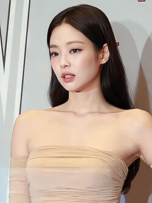

Jennie Kim e uma cantora, rapper e modelo sul-coreana, conhecida mundialmente por ser integrante do grupo feminino BLACKPINK. Ela é um icone da moda, admirada por seu talento e estilo unico.
Jennie nasceu em 16 de janeiro de 1996, em seul, Coreia do sul. Durante sua infância, ela se mudou para a Nova Zelandia, onde estudou por alguns anos. Depois de voltar para Coreia, ela entrou para YG Entertainment em 2010 ainda adolecente
Em 2016, Jennie debutou como integrante do BLACKPINK ao lado de Jisoo, Lisa, e Rosé. O grupo logo conquistou sucesso mundial com musicas como "Boombayah", "DDU-DU DDU-DU" e "How you like that". Jennie se destacou por sua presença de palco e seu rap marcante.
Em novembro de 2018 Jennie lançou sua primeira musica solo chamada "SOLO", que fez enorme sucesso e se tornou um hit global. em 2023 lançou "You & Me", durante a turnê BORN PINK, encantou ps fãs com uma performace romântica.
Em 2024, Jennie, iniciou uma nova fase em sua carreira com o lançamento de "Ruby" seu primeiro album solo official. O projeto foi lançado atraves de seu proprio selo artistico "ODDATELIER (OA)", e marcou inicio da sua independencia como artista solo. Com conceito maduro, sensual e sofisticado Ruby mostra varias facetas da Jennie como cantora, compositora e icone de estilo.
|Alem da musica, Jennie tambem se destacou como atriz na serie da HBO 'the idol", onde interpretou a personagem Dyanne. Mesmo com criticas à serie, sua atuação internacional.